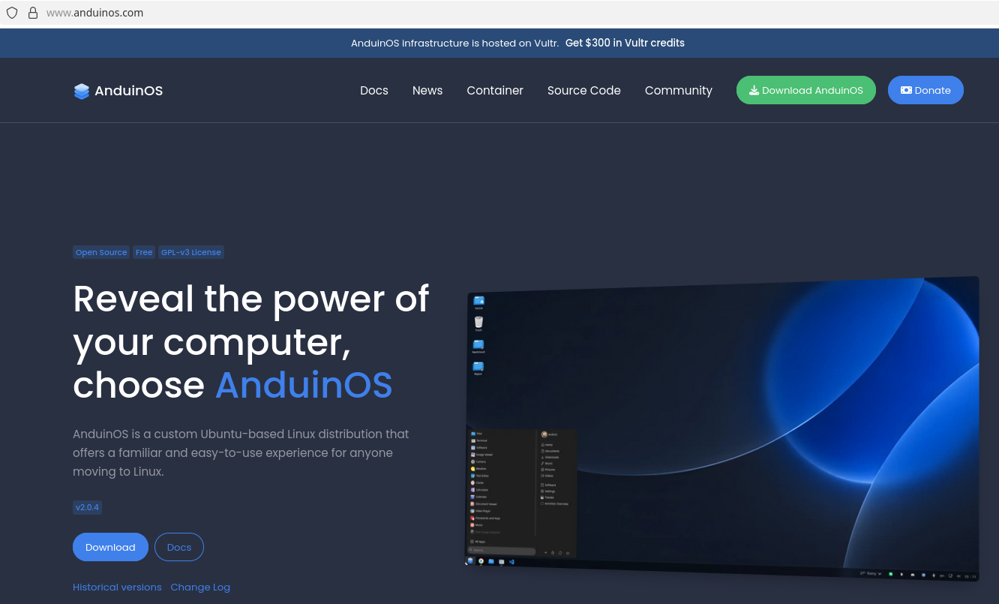
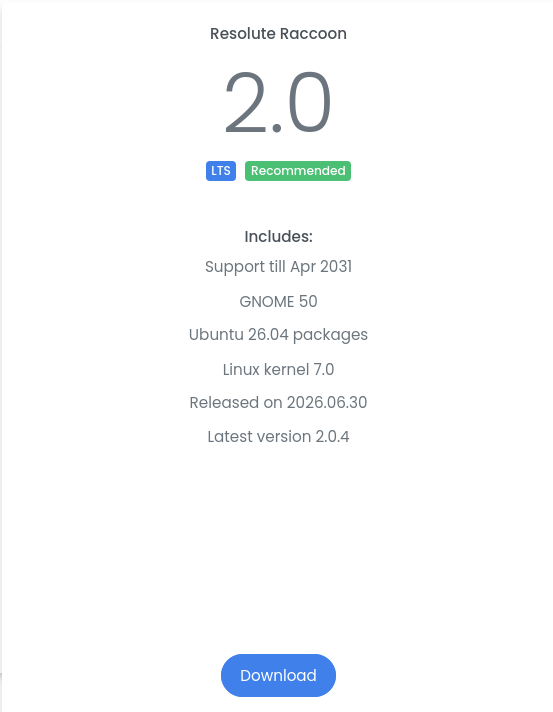
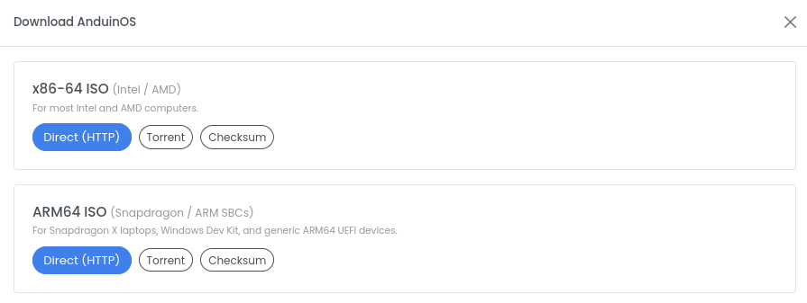
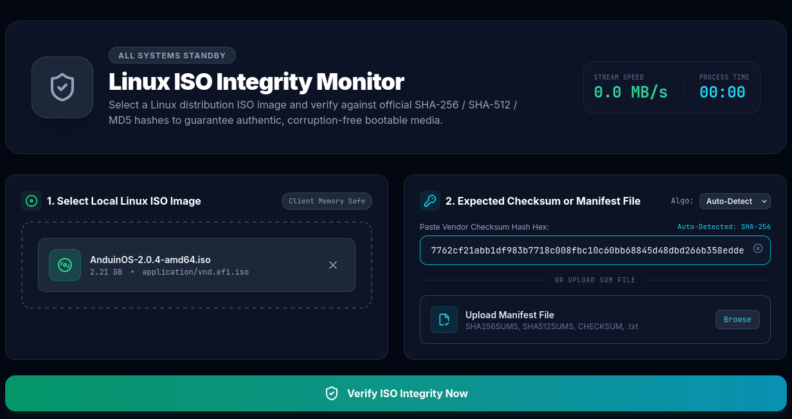
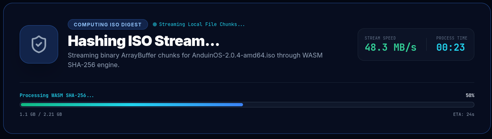
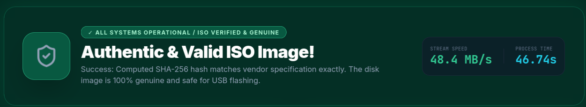

Download safety
How to verify an Anduin Download

Visit the official Anduin download page and click on download.

Click on download for the version you want to download

Click on the direct download link.
Click on the checksum link.

Go to the Linux ISO Checker homepage.
Click "browse files" or drag the ISO image from your Downloads folder into the "Select Local Linux ISO Image" box.
Enter the checksum from the Anduin page into the checksum field on the Linux ISO Checker.
Click "Verify" to compare the calculated checksum with the expected value.

Depending on the file size, the verification process may take a minute or two to process.
When the process has completed, you will see the results of the verification.
